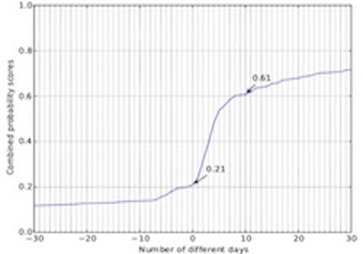

Home
I am an Assistant Research Professor in the College of Cybersecurity , Sichuan Univeristy. I am broadly interested in all aspects of network and system security. My work follows a measurement and data driven approach to characterize and detect critical security issues in large-scale systems. My current research focuses on attack detection, underground economics, cyber threat intelligence.
I obtained my Ph.D. in Computer Science at the Sichuan Univeristy, and I did a Joint PhD student at University of California, Santa Barbara, under the supervision of Prof. Giovanni Vigna.
I am looking for self-motivated students who have strong interests in Web security research. If you are interested, feel free to send me an email.
Projects

Artificial Intelligence in Cyber Defense
Internet Infrastructure Security, The NearestFit progress indicator targets accuracy of progress predictions for MapReduce jobs in the presence of data skewness and super-linear computations. This is achieved combining performance profiling, machine learning techniques, and data streaming algorithms.Related papers: [Access] [ICCSP] [DSC]

Social Network Security and Cyber Threat Intelligence
The NearestFit progress indicator targets accuracy of progress predictions for MapReduce jobs in the presence of data skewness and super-linear computations. This is achieved combining performance profiling, machine learning techniques, and data streaming algorithms.Related papers: [AsiaCCS] [C&S]
Artificial Intelligence in Medicine (Interdisciplinary)
The NearestFit progress indicator targets accuracy of progress predictions for MapReduce jobs in the presence of data skewness and super-linear computations. This is achieved combining performance profiling, machine learning techniques, and data streaming algorithms.Related papers: [Transfusion]
Publications
- [Transfusion] Analysis of a large data set to identify predictors of blood transfusion in primary total hip and knee arthroplasty[J]. Transfusion, 2018, 58(8): 1855-1862. [DOI] [PDF]
- [Access] Research on Malicious JavaScript Detection Technology Based on LSTM[J]. IEEE Access, 2018, 6: 59118-59125. [DOI] [PDF]
- [ICCSP] WOVSQLI: Detection of SQL injection behaviors using word vector and LSTM[C]. Proceedings of the 2nd International Conference on Cryptography, Security and Privacy. ACM, 2018: 170-174. [DOI] [PDF]
- [DSC] Webshell Detection Based on Random Forest–Gradient Boosting Decision Tree Algorithm[C]. 2018 IEEE Third International Conference on Data Science in Cyberspace (DSC). IEEE, 2018: 153-160. [DOI] [PDF]
- [ICCAI] Detecting Webshell Based on Random Forest with FastText[C]. Proceedings of the 2018 International Conference on Computing and Artificial Intelligence. ACM, 2018: 52-56. [DOI] [PDF]
- [ICCSP] DarkHunter: A Fingerprint Recognition Model for Web Automated Scanners Based on CNN[C]. Proceedings of the 2nd International Conference on Cryptography, Security and Privacy. ACM, 2018. [DOI] [PDF]
- [ICCAI] DeepXSS: Cross Site Scripting Detection Based on Deep Learning[C]. Proceedings of the 2018 International Conference on Computing and Artificial Intelligence. ACM, 2018: 47-51. [DOI] [PDF] [Data]
- [AsiaCCS] Gossip: Automatically Identifying Malicious Domains from Mailing List Discussions[C]. Proceedings of the 2017 ACM on Asia Conference on Computer and Communications Security (AisaCCS). ACM, 2017: 494-505. [DOI] [ArXiv]
- [C&S] A study on Web security incidents in China by analyzing vulnerability disclosure platforms[J]. Computers & Security , 2016, 58: 47-62. [DOI] [PDF]
Teaching
- [Spring 2019] Introduction to Object-Oriented Programming.
- [Fall 2018] Professional Workshop.
- [Spring 2018] Introduction to Object-Oriented Programming.
Service
- [Conference] Publicity Chair The Information Security Conference (ISC), 2019.
- [Journal] Outstanding Contribution in Reviewing by Computer & Security, 2018.
- [Journal] Reviewer for Journal of Information Security and Applications, 2018.
- [Journal] Reviewer for Frontiers of Computer Science, 2018.
- [Journal] Reviewer for IEEE Access, 2018.
- [Journal] Reviewer for Journal of Power and Energy Systems, 2017.